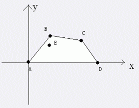
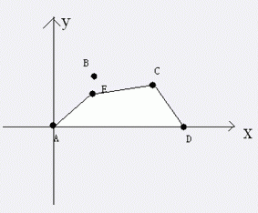

近来 A 国和 B 国的矛盾激化，为了预防不测，A 国准备修建一条长长的防线，当然修建防线的话，肯定要把需要保护的城市修在防线内部了。可是 A 国上层现在还犹豫不决，到底该把哪些城市作为保护对象呢？又由于 A 国的经费有限，所以希望你能帮忙完成如下的一个任务：
给出你所有的 A 国城市坐标
A 国上层经过讨论，考虑到经济问题，决定取消对 $i$ 城市的保护，也就是说 $i$ 城市不需要在防线内了
A 国上层询问对于剩下要保护的城市，修建防线的总经费最少是多少
你需要对每次询问作出回答。注意单位 $1$ 长度的防线花费为 $1$。
A 国的地形是这样的，形如下图，$x$ 轴是一条河流，相当于一条天然防线，不需要你再修建。
A 国总是有两个城市在河边，一个点是 $(0,0)$，一个点是 $(n,0)$，其余所有点的横坐标均大于 $0$ 小于 $n$，纵坐标均大于 $0$。A 国有一个不在 $(0,0)$ 和 $(n,0)$ 的首都。$(0,0)、(n,0)$ 和首都这三个城市是一定需要保护的。

上图中，$A,B,C,D,E$ 点为A国城市，且目前都要保护，那么修建的防线就会是 $A-B-C-D$，花费也就是线段 $AB$ 的长度 $+$ 线段 $BC$ 的长度 $+$ 线段 $CD$的长度。如果，这个时候撤销 $B$点的保护，那么防线变成下图。

第一行，三个整数 $n,x,y$ 分别表示河边城市和首都是 $(0,0)$，$(n,0)$，$(x,y)$。
第二行，一个整数 $m$。
接下来 $m$ 行，每行两个整数 $a,b$ 表示 A 国的一个非首都非河边城市的坐标为 $(a,b)$。
再接下来一个整数 $q$，表示修改和询问总数。
接下来 $q$ 行每行要么形如1 i，要么形如2，分别表示撤销第 $i$ 个城市的保护和询问。
1 i
2
对于每个询问输出 $1$ 行，一个实数 $v$，表示修建防线的花费，保留两位小数。
4 2 1 2 1 2 3 2 5 2 1 1 2 1 2 2
6.47 5.84 4.47
$m \le 100000,q \le 200000,n>1$。
所有点的坐标范围均在 $10000$ 以内，数据保证没有重点。
 Comet OJ
Comet OJ